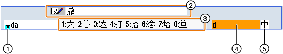

Mit dem Eingabeeditor IME (Input Method Editor) können Sie auf klassischen Panels (ohne Touch-Bedienung) asiatische Schriftzeichen auswählen, deren Laute Sie eingeben. Diese Schriftzeichen werden in die Bedienoberfläche übernommen.
| Hinweis |
Aufruf Eingabeeditor mit <Alt + S>Der Eingabeeditor kann nur dort aufgerufen werden, wo die Eingabe asiatischer Schriftzeichen zulässig ist. |
Der Editor steht für folgende asiatische Sprachen zur Verfügung:
-
Simplified Chinese
-
Traditional Chinese
Eingabearten
Eingabeart | Beschreibung |
|---|---|
Pinyin-Eingabe | Lateinische Buchstaben werden so zusammengesetzt, dass der Laut des Schriftzeichens wiedergegeben wird. Der Editor bietet alle Zeichen aus dem Wörterbuch zur Auswahl an. |
Zhuyin-Eingabe (nur Traditional Chinese) | Nichtlateinische Zeichen werden so zusammengesetzt, dass der Laut des Schriftzeichens wiedergegeben wird. Der Editor bietet alle Schriftzeichen aus dem Wörterbuch zur Auswahl an. |
Eingabe lateinischer Buchstaben | Die eingegebenen Zeichen werden direkt in das Eingabefeld übernommen, aus dem der Editor aufgerufen wurde. |
Aufbau des Editors
① | Lautauswahl aus dem Wörterbuch |
② | Lernfunktion des Wörterbuchs |
③ | Angebote Schriftzeichen |
④ | Lauteingabe |
⑤ | Funktionsauswahl |
Beispiel: Pinyin-Eingabe

① | Lautauswahl aus dem Wörterbuch |
② | Angebotene Schriftzeichen (für Eingabefeld) |
③ | Angebote Zeichen (für Lauteingabe) |
④ | Lauteingabe |
⑤ | Funktionsauswahl |
Beispiel: Zhuyin-Eingabe
Funktionen
Pinyin-Eingabe | |
| | Eingabe von lateinischen Buchstaben |
| | Bearbeitung des Wörterbuchs |
Wörterbücher
Die mitgelieferten Wörterbücher für Simplified Chinese und Traditional Chinese können erweitert werden:
Wenn Sie neue Laute eingeben, bietet der Editor eine neue Zeile an. Der eingegebene Laut wird in bekannte Laute zerlegt. Für jeden Bestandteil wählen Sie das zugehörige Schriftzeichen. In der zusätzlichen Zeile werden die zusammengesetzten Zeichen angezeigt. Mit der Taste <Input> übernehmen Sie das neue Wort in das Wörterbuch und in das Eingabefeld.
Sie können neue Laute mit jedem Unicode Editor in eine Textdatei erfassen. Beim nächsten Start des Eingabeeditors werden diese Laute in das Wörterbuch importiert.